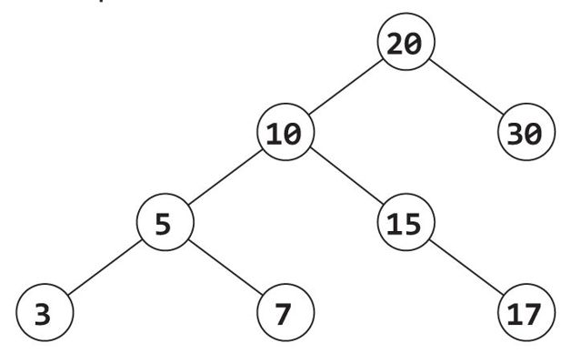

Solutions
All solutions will be implemented with Java. If you don’t know Java, that’s okay. We’ll try to keep our code free of complex Java syntax so that you can focus on the main algorithm.
Note: Programming code can be difficult to read on a Kindle's narrow screen, since it causes line breaks in the wrong places. If your Kindle support landscape mode, you might want to try that. (This is supported with the Kindle Paperwhite.) Otherwise, try reading it on the desktop app (resize the app to have a larger page size and increase the words per line).
16.1 Given a sorted array of positive integers with an empty spot (zero) at the end, insert an element in sorted order.
We can imagine that our array looks something like this (with a blank spot at the end):
1 4 7 8 9 _
If we need to insert an element like 6, we can’t just insert it at the end. We are supposed to put it in order.
1 4 6 7 8 9
This requires “shifting” all elements down to make space for 6 and then inserting it.
There are two ways of approaching this problem.
Approach 1: Shift From Back, Then Insert
The first approach is to shift all the elements over and then insert the value x. We have to be careful though to not overwrite values as we’re inserting.
Instead of shifting from the front, we can shift from the back moving forwards.
1 4 7 8 9 _
We would first copy 9 into the empty spot. Then 8 into where 9 was. Then 7 into where 8 was, and so on. When we find the appropriate spot for x, we stop and insert x.
We return true if we could insert the element or false if there was an error.
Approach 2: Swap Elements Moving Forward
Alternatively, we could iterate forwards through the array. For the initial elements in the array (the ones that are less than x), we don’t do anything. Those won’t be moved.
However, when we find where x should be inserted, we swap x and the current element in the array. The value of x will now equal the old element in the array.
When we get to the next element, we want to swap x for that value. We continue doing this for each element in the array until we get to the end.
insert 6 into 2, 3, 7, 8, 9, _
set x = 6
start i at A[0]
move i to A[1]
move i to A[2]
swap A[2] and x.
A = {2, 3, 6, 8, 9, _}
x = 7
swap A[3] and x.
A = {2, 3, 6, 7, 9, _}
x = 8
swap A[4] and x.
A = {2, 3, 6, 7, 8, _}
x = 9
swap A[5] and x.
A = {2, 3, 6, 7, 8, 9}
x = _
The following code implements this algorithm.
Note that once the if statement on line 8 becomes true, it will always be true.
Both algorithms will take O(N) time.
16.2 Reverse the order of elements in an array (without creating a new array).
At first glance, we might want to just create a second array, iterate over the elements in order, and insert them in reverse order into the new array. Unfortunately, the question says to not create a second array.
Let’s look at any example.
Original: 0, 1, 2, 3, 4, 5, 6
Reversed: 6, 5, 4, 3, 2, 1, 0
You might notice that by reversing the array, we’re putting the 0 where the 6 is and the 6 where the 0 is. Likewise, the 5 and the 1 are put in each other’s places. That is, we’re swapping values!
Rather than create a second array, we can iterate through the array, swapping the left values with the corresponding values on the right. We only need to iterate through the left half of the array, since the right half of the array will have been taken care of already.
Be very careful with the arithmetic on lines 2 and 5. Those are the sorts of things you should double and triple check in an interview.
Both algorithms will take O(N) time.
16.3 Given two lists (A and B) of unique strings, write a program to determine if A is a subset of B. That is, check if all the elements from A are contained in B.
We’re told that the two lists contain unique strings, so we only need to check if all the elements in one list are contained in the other.
Approach 1: Brute Force
We can approach this by “brute force.” For each element in A, check if it is in B.
As soon as we find an element a in A which is not in B, we can return false because we know A is not a subset. If we reach the end of A and haven’t returned yet, then we know we were able to find every element. We return true.
This algorithm takes O(a*b) time, where a is the length of A and b is the length of B.
Approach 2: Hashtable
The reason that the earlier approach is so slow is that we have to search through B for each element. Wouldn’t it be nice if we could just look up if an element is in B?
We can! This is what a hashtable allows us to do. We can build a hashtable of all the elements in B. Then, when we want to look up if an element is in B, we just use that hashtable.
This algorithm takes O(a+b) time, where a is the length of A and b is the length of B. It takes O(b) additional memory to hold the hashtable.
16.4 You are given a two-dimensional array of sales data where the first column is a product ID and the second column is the quantity. Write a function to take this list of data and return a new two-dimensional array with the total sales for each product ID.
Example:
Input:
211,4
262,3
211,5
216,6
Output:
211,9
262,3
216,6
The output for this method needs to be a list of product IDs and their total counts. We can do this in a straightforward manner by using a hashtable.
We iterate through the list of (productID, quantity) pairs. For each value, we increment its entry in the hashtable or insert it if it’s not already in there. Finally, we convert the hashtable back into an array.
If you don’t know the specific commands for things like keySet and containsKey, don’t worry. Your interviewer shouldn’t care about things like this. The important thing is that you know how to translate an approach into something that resembles workable code.
This algorithm takes O(N) time, where N is the number of lines in the input.
16.5 Insert an element into a binary search tree (in order). You may assume that the binary search tree contains integers.
This is a straightforward question that follows from the definition of a binary search tree.
In a binary search tree, lesser values are put on the left of a node and greater values are put on the right.
The easiest way to implement this is recursively. Start with the root and compare the value you want to insert, x. If x is less than the root, then call insert on the root.left. When x is greater than the root, then call insert on the right side. Repeat this until you don’t have a left or right child. Insert x there.
The time to insert a node will depend on the height of the tree. If the tree is relatively balanced, it should have height O(log N) where N is the number of nodes in the tree. However, if the tree is very imbalanced (for example, basically a straight line down of nodes all on one side), the height could be as much as N.
16.6 Given a binary search tree which contains integers as values, calculate the sum of all the numbers.
If we approach problems from the right perspective, some problems are surprisingly simple. In this case, the “right” perspective means recursively.
Suppose we want to compute the sum of the nodes in a tree like this:

We could traverse the tree, collapse it into an array, and then compute the sum of those values. That’s a lot more complicated than is necessary.
The simpler way is to think about the problem in terms of its subproblems. The sum of the entire tree is going to be the sum of the left subtree + sum of the right subtree + sum of the root.
sum(tree_at_20) =
sum(tree_at_10)
+ sum(tree_at_30)
+ value_at_node_20
Getting the sum at node 10 can then be defined in terms of its subproblems.
sum(tree_at_10) =
sum(tree_at_5)
+ sum(tree_at_15)
+ value_at_node_10
We can almost directly translate this into code.
If we hit the end of a path (a null node), we return 0. If you prefer, we could instead do this:
Regardless of which code you use, the runtime will be O(N), where N is the number of nodes in the tree.
One way to see the runtime is to realize that sum will be called exactly once for each node in the tree. If there are O(N) calls to sum, then the runtime should be O(N).
16.7 Insert a node into a sorted linked list (in order). (Don’t forget about what happens when the new element is at the start or end!)
To insert a number in order into a linked list, we first need to find the right place to insert the node. Then, we need to actually insert it.
The tricky bit is figuring out how to handle inserting a node into the front of the linked list.
Imagine we call an insertInOrder method that looks like this, and it (for this particular case) needs to insert n into the front of the linked list:
void insertInOrder(LinkedListNode nd, int value)
Just inserting node n and having n.next point to nd is not enough. Whoever is using the linked list doesn’t know that the real head of the linked list has been updated from nd to n. They only have a reference to nd.
Therefore, in an insert method, you need to return the new head of the linked list. Most of the time, the head will be the same as it was before you called insert. Sometimes it will change though, and you need to notify the caller of this.
This algorithm takes O(N) time, where N is the number of nodes.
16.8 “Sort” a linked list that contains just 0s and 1s. That is, modify the list such that all 0s come before all 1s.
There are many ways of doing this problem.
Approach 1: Build Two Linked Lists
One of the simplest ways is to build a “zeros list” and a “ones list” and then join them at the end.
Observe that we need to return the new head of the linked list, as it might have changed.
Approach 2: Grow Left and Right
The prior approach gets lengthy because we need to keep track of the front and back of two different lists, which requires constantly updating four different variables.
Four variables aren’t actually necessary though. All the problem has asked us to do is to put all the 0s before the 1s. We don’t have to keep the nodes in the same order that they were in originally.
Therefore, we can instead just keep track of the head and tail of the (new) linked list. When we get a new 0, we insert it at the very front. When we get a new 1, we insert it at the very end. This will keep all 0s before every 1.
We again need to return the new head since it might have changed.
Approach 3: Count the Zeros
We’re not actually required to use the same actual objects that we were given. If we moved values, instead of nodes, that would fit the problem requirements.
Therefore, we can just iterate through the linked list once, counting the number of 0s. Then, we iterate through it again, setting the first k values to 0 and the rest to 1.
In this approach, we’re moving values, not nodes. The actual reference to the head won’t change, so we don’t need to return anything.
Approach 4: Swap the Values
Since we only need to move the values, we can also just iterate through the linked list, swapping the 0s and 1s as we find them.
This approach works by two pointers, p and q. The p pointer looks for 1s and the q pointer looks for 0s. When they find their values, they swap.
0->0->0->1->1->0->1->0->1->0
p
0->0->0->1->1->0->1->0->1->0
p
0->0->0->1->1->0->1->0->1->0
p q
0->0->0->1->1->0->1->0->1->0
p q
0->0->0->0->1->1->1->0->1->0
p q
// move p to next 1
0->0->0->0->1->1->1->0->1->0
p q
// move q to next 0
0->0->0->0->1->1->1->0->1->0
p q
// swap
0->0->0->0->0->1->1->1->1->0
p q
// move p to next 1
0->0->0->0->0->1->1->1->1->0
p q
// move q to next 0
0->0->0->0->0->1->1->1->1->0
p q
// swap
0->0->0->0->0->0->1->1->1->1
p q
In other words, p is always pointing to the first 1 and q is always pointing to the first out of place 0 (which is the first 0 after p). Whenever q finds a 0, we know the 0 is out of place. We swap its value with p and move p to the next node.
This approach might be the least intuitive for some people, but—with the use of a helper function—it leads to fairly short code.
These are just four ways of solving the problem, but there are many other ways too. These four approaches are all O(N).
16.9 Write a function which takes a stack as input and returns a new stack which has the elements reversed.
The most straightforward way to do this is to just create a new stack and pop the elements from the first stack onto the second. This will put the top element from the original stack on the bottom of the new stack.
The only problem with this is that our original stack gets completely emptied in the process. If this is a problem (ask your interviewer!), then you can use an additional stack to hold all the popped values.
We push the popped values onto both the temp stack and the reversed stack. (These stacks will have the same elements in the same—reversed—order.) Once we’re done popping the elements from stack, we push them back from temp onto stack.
Both approaches will have O(N) runtime. The second one will go through two passes instead of one, but constants don’t affect the big O time. This may seem surprising to some people, but remember: big O is not an expression of how many seconds something actually takes. It expresses how the time scales (in this case, linear) as the size of the input gets longer and longer.
16.10 Write a function which removes all the even numbers from a stack. You should return the original stack, not a new one.
For this problem, we can rely on the same instinct as the second approach from the prior problem: reversing something twice puts the elements back in their original order.
We can just pop the stack, element by element. If the element is odd (that is, not even), push it onto a new, temporary stack. Then, once we’re all done, push them back onto their original stack.
This algorithm will take O(N) time. Observe that, since you have to go through every element, you can’t solve the problem any faster than this.
16.11 Write a function to check if two queues are identical (same values in the same order). It’s okay to modify/destroy the two queues.
We are allowed to modify the two queues, which should give us a clue that we need to do just that.
We can repeatedly remove the front of each linked list and compare the values. If the values are not equal, then we immediately return false.
What happens when one list is emptied? That depends. If both lists are empty, then we know the linked lists are identical (nothing has failed yet). However, if only one list is empty and the other is not, then we know the lists were of different sizes. After all, we’re removing the elements in the same order.
This algorithm takes O(N) time, where N is the length of the smaller list. Why the smaller? Because we exit as soon as either list is empty. That will happen to the smaller list first. It doesn’t matter how big the bigger list is; it won’t affect the runtime.
16.12 Write a function to remove the 13th element from a queue (but keep all the other elements in place and in the same order).
The approach to this problem depends on what you assume the queue data structure supports.
If we get access to a Node class, then this is fairly easy. We just iterate through the nodes and delete it when we get to the 13th.
However, if it’s a true Queue class, we don’t necessarily have access to the nodes like this. We may only have an add (to the back of the list) and remove (from the front of the list) method.
We could create a second list object, but this isn’t actually necessary. Observe that if we continuously remove elements from the front and add them to the back, we’ll wind up with the exact same list.
To remove the 13th element, we can therefore just remove each element and re-add it—skipping the 13th element.
We’ve implemented this code using a variable k, rather than hard coding the number 13. This is generally a good coding practice.
This algorithm takes O(N) time, where N is the number of nodes.
16.13 Given two sorted arrays, write a function to merge them in sorted order into a new array.
The most efficient way to tackle this is to use the fact that the arrays are sorted. We can merge them by taking successive elements repeatedly until we reach the end of both arrays. We maintain pointers to where we are in each array so that we can just easily move onto the next array.
Let’s take an example of two arrays.
A: 1 5 8 9 B: 2 4 9 10 12
We’ll start off with the p and q pointers at the beginning of the two arrays:
A: 1 5 8 9 B: 2 4 9 10 12
p q
A[p] is smaller than A[q], so we put A[p] into our result array. We then move p to the next value.
A: 1 5 8 9 B: 2 4 9 10 12
p q
Result: 1
We compare A[p] and A[q] again, putting the smaller element into the resulting array. We also need to keep track of where we are in the result array. We repeat this process until we are done with both arrays.
A: 1 5 8 9 B: 2 4 9 10 12
p q
Result: 1 2
A: 1 5 8 9 B: 2 4 9 10 12
p q
Result: 1 2 4
A: 1 5 8 9 B: 2 4 9 10 12
p q
Result: 1 2 4 5
A: 1 5 8 9 B: 2 4 9 10 12
p q
Result: 1 2 4 5 8
A: 1 5 8 9 B: 2 4 9 10 12
q
Result: 1 2 4 5 8 9
A: 1 5 8 9 B: 2 4 9 10 12
q
Result: 1 2 4 5 8 9 9
A: 1 5 8 9 B: 2 4 9 10 12
q
Result: 1 2 4 5 8 9 9 10
A: 1 5 8 9 B: 2 4 9 10 12
Result: 1 2 4 5 8 9 9 10 12
In an interview, it’s useful to walk through the example in this detail to reduce the number of mistakes you make.
If you wanted to reduce the number of pointers we have, we can remove the index variable. It will always be equal to p + q.
This code takes O(M+N) time, where M is the length of the first array and N is the length of the second.
16.14 Implement insertion sort.
Insertion sort operates by iterating through the array, inserting each element in order on the element’s left side.
We can most cleanly implement this as two different functions.
The first function performs the overall algorithm: pick up an element, insert it in order, pick up the next one, and so on.
Observe that our for loop starts at 1 instead of 0. This is because the 0th element can never be out of order, by itself. (A single element subarray is always sorted.)
Now we just need to implement a method that will take an element A[k] and insert it in order into the elements to the left of it (provided those are sorted).
To insert A[k] in order, we will need to shift each element over by one, until we find the right spot for the element.
This algorithm will take O(N2) time.
16.15 Implement binary search. That is, given a sorted array of integers and a value, find the location of that value.
Binary search works by repeatedly “halving” the array into subarrays. In the first iteration, we compare the value x to the midpoint and learn whether x will be in the left half or the right half. Then, we repeat this step with this new subarray: is x found on the left half of it (the new subarray) or the right?
We can implement this either recursively or iteratively (non-recursively). We’ll start with the recursive solution since it’s more intuitive for most people.
For the iterative solution, we take a very similar approach.
A good exercise is to think about how different bits of logic from the recursive solution translates to the iterative solution. For example, what happened to the check on line 6 of the recursive solution?
16.16 You are given an integer array which was sorted, but then rotated. It contains all distinct elements. Find the minimum value. For example, the array might be 6, 8, 9, 11, 15, 20, 3, 4, 5. The minimum value would obviously be 3.
A brute force solution would be to just iterate through the array and look for the minimum value. We can guess that this isn’t what the interviewer is looking for though, since it doesn’t use the sorting information.
To come up with a more optimal solution, we probably want to use the information we’re given—the array is “sorted,” but rotated.
Since the array is somewhat sorted, let’s think about applying some of the concepts from binary search. Binary search works by looking at the midpoint repeatedly.
In this problem, what does the midpoint tell us? In and of itself, the midpoint being 15 doesn’t tell us anything. However, if we know that the left side is 6 and the right side is 5, we can conclude something. Since left > right, we know that the array is out of order. But since left < middle, we know the left is in order but the right is not.
6, _, _, _, 15, _, _, _, 5
From examining the above array, we can determine that the inflection point (which is the minimum element) is on the right half. Our problem is now divided in half.
To find the minimum element, we now just recurse.
20, _, _, 5
20, 3
3
We can implement this recursively. We stop when we find that the left side is less than the right side. This indicates that this portion of the array is in order, and therefore that the left is the smallest element.
Alternatively, we can implement this algorithm iteratively with a while loop.
Be very careful in problems like this with your termination and recursion conditions. Think about things like why you make left = middle + 1 (why the +1?) but right = middle. Those are easy places to make mistakes.
16.17 Using depth-first search, check if a tree contains a value.
Depth-first search works by checking if a value v is equal to the current node’s value. If it is not, then you search each child of the node, one by one.
The difference between depth-first search (DFS) and breadth-first search (BFS) is that in DFS, the entire subtree of a node’s child is searched before you move on to any of the node’s other children. That is, all of node.child[0].children will be searched before you even look at node.child[1].
We can implement this recursively.
Because this is a tree, we don’t need to be concerned about infinite loops. That is, we don’t need to be concerned about traversing through node’s children, and node’s “grandchildren,” and accidentally winding up back at node—to be forever stuck in an infinite loop (yikes!). Trees specifically forbid cycles like this.
If this weren’t the case—if we were in a graph instead of a tree—we would have to use an isVisited flag to indicate that we’ve already visited this node.
16.18 Write the pseudocode for breadth-first search on a binary tree. Try to be as detailed as possible.
To perform breadth-first search, we want to search a node level by level. That is, we want to search each of node’s children before we search any of their children.
Although breadth-first search is conceptually straightforward (just search a node’s children, level by level), implementing it can be a little less intuitive. The main trick to remember is that we need to use a queue.
A queue, as you might recall, is a data structure that allows us to add items on one side and remove them from the other side. It is a “first in, first out” (FIFO) data structure. This enables us to basically flag nodes “as to be processed later.”
In BFS, we “visit” a node by comparing the value we’re searching for (x) to the current value. If it matches, we’re done and can immediately return true. Else, then we add node’s children to the end of the queue. We then move on, pulling a node from the other side and searching it.
Because this is a tree, we do not need to worry about winding up in a cycle. However, if this were not the case, we would need to use an isVisited flag to ensure we don’t revisit the same node.
Breadth-first search takes O(N) time, where N is the number of nodes in the graph (or tree). This is because we might potentially need to search all of the nodes.
16.19 Design an algorithm and write code to find all solutions to the equation a3 + b3 = c3 + d3 where a, b, c, and d are positive integers less than 1000. If you wish, you can print only “interesting” solutions. That is, you can ignore solutions of the form x3 + y3 = x3 + y3 and solutions that are simple permutations of other solutions (swapping left and right hand sides, swapping a and b, swapping c and d). For example, if you were printing all solutions less than 20, you could choose to print only 23 + 163 = 93 + 153 and 13 + 123 = 93 + 103.
We can start off with a naive solution. We just iterate through all possible values for a, b, c, and d. When they are equal, we can print this set.
This is a good start. Now, how can we make it faster?
We can get some minor wins by “short circuiting”—i.e., breaking when the right side is already too large. We can break from the c loop when a3 + b3 < c3. (Surprisingly, doing an equivalent check on the d loop doesn’t save us any time. Yes, we’d be breaking early from the innermost loop when d is very large. But, for all smaller values of d, we’re running an extra several steps.)
We can also save a bit of time by removing duplicates. Consider the solutions below, all of which are essentially equivalent:
Only one of these needs to be printed.
We can cut out some of these duplicates by forcing a <= b and c <= d. This will prevent us from printing pairs which are equivalent other than a and b being swapped or c and d being swapped.
We still need to worry about the left and right side being swapped though. If we require a < c (this will be true for exactly one of the two sets), then we will remove this case too.
We can handle all of these by picking the appropriate start conditions of the for loops. If we start b at a, then b will always be greater than or equal to a. We can do the same thing for c, but starting it a + 1. (Why +1? Because if c = a, then d = b. The result a3 + b3 = a3 + b3 isn’t very interesting.)
We can also conclude that c is not bigger than b. This is because a < b and c < d. If you consider the equation a3 + b3 = c3 + d3. It would be impossible for both of the left values to be less than both of the right values and still have the left and right sides be equal.
This helps, but the runtime will still be O(N4). We can do better.
Let’s look at the equation we’re given: a3 + b3 = c3 + d3. Once we’ve determined the values of a, b, and c, there’s only one possible value for d. The only question is if that’s an integer or not. So, rather than iterating through all possibilities for d, we can just check if the resulting d value is an integer.
This is O(N3). This is better, but not yet optimal.
Let’s think about what our algorithm does. The current approach is something like this:
for each pair (a, b) where a < 1000 and b < 1000:
compute cubeAB = a^3 + b^3
find pairs (c, d) that sum to cubeAB
For any given pair, we are iterating across all possible other pairs to see if they’re equal.
Instead, we can just group these pairs by sum. This requires just iterating through the pairs one time.
As we iterate through the pairs, we create a mapping from sum -> pair (p, q). Then, we print out all pairs of pairs within each sum. That is, if we find pair1, pair2, pair3, pair4—each with a sum of x—we would print (pair1, pair2), (pair1, pair3), (pair1, pair4), (pair2, pair3), (pair2, pair4), and (pair3, pair4).
Our sum -> pairs mapping might look something like this:
260245440 = 823 + 6383
= 1443 + 6363
958595904 = 223 + 9863
= 1803 + 9843
= 6923 + 8563
8587000 = 463 + 2043
= 1203 + 1903
95880024 = 1023 + 4563
= 2283 + 4383
...
We can implement this with a hashtable, representing the pair (a, b) with a string for simplicity.
This solution takes O(N2) time where N is max size of a, b, c, and d.
16.20 Given a string, print all permutations of that string. You can assume the word does not have any duplicate characters.
This is a classic recursion problem.
Let’s approach this with an example that we build from the bottom up.
a -> a
ab -> ab, ba
abc -> abc, acb, bac, bca, cab, cba
How could we build all permutations of abcd off of any or all of these answers?
The main difference is the presence of d. If we have all permutations of abc, we could “splice” d into each of those strings (in all possible ways).
abc -> abc, acb, bac, bca, cab, cba
splice(abc, d) -> dabc adbc abdc abcd
splice(acb, d) -> dacb adcb acdb acbd
splice(bac, d) -> dbac bdac badc bacd
splice(bca, d) -> dbca bdca bcda bcad
splice(cab, d) -> dcab cdab cadb cabd
splice(cba, d) -> dcba cdba cbda cbad
The code below implements this.
This algorithm will take O(N!) time (where N is the number of characters in the string) since there are N! permutations.
We can’t optimize this algorithm, but there is another approach. This is less intuitive for many people.
If we have the string abcd, we can build it from subresults as follows:
perms(abcd) = {a + perms(bcd)}
+ {b + perms(acd)}
+ {c + perms(abd)}
+ {d + perms(abc)}
That is, we remove each character and permute the remaining. Then, we prepend the removed character to each permutation.
Rather than prepending each character to its “subpermutations,” we can let the subpermutation handle this. The permutations function gets a prefix string, which represents what currently needs to be prepended, and permutes the rest.
Like the earlier approach, this is O(N!).
16.21 In a group of people, a person is called a “celebrity” if everyone knows them but they know no one else. You are given a function knows(a, b) which tells you if person a knows person b. Design an algorithm to find the celebrity (if one exists).
For simplicity, you can assume that everyone is given a label from 0 to N-1. You need to implement a function int findCelebrity(int N).
Observe that:
Let’s start with a simple brute force approach. We can iterate through all possible people, checking if this person is a celebrity. As soon as we find a person who fits the criteria of being a celebrity, we can return this person.
This takes O(N2) time since we are potentially calling knows(a, b) on every pair of people.
Let’s see if we can do this faster.
Consider a call to knows for two people, x and y. The result of knows(x, y) will either be true or false. What can we conclude from these results?
This gives us a very interesting learning: given two people who are both potential celebrities, we can always eliminate one person as the celebrity.
Note: Now is a good time to pause to try to figure out the rest of the solution.
If we can always eliminate one person as the celebrity, then we should be able to trim down our list of N people to just one potential celebrity in N-1 calls to knows. At that point, we can then verify that candidate really is the celebrity (since there could be no celebrities) by calling knows again for candidate and every other person.
This can be done in two passes:
Before diving into the code, let’s think about how we implement the first pass: finding the candidate.
We could have a list that we remove people from as they are eliminated. Shifting elements around in a list is time consuming and, frankly, more work than necessary.
If we imagine our calls to knows, we can think about our algorithm as kicking things off with 0 as the candidate. When we call knows(0, 1), we will either eliminate 0 or 1. If we eliminate 0, then candidate becomes 1. We then move on to knows(candidate, 2).
Step 2 uses the same isCelebrity method that we implemented earlier.
This algorithm takes O(N) time.
16.22 You have an NxN matrix of characters and a list of valid words (provided in any format you wish). A word can be formed by starting with any character and then moving up, down, left, or right. Words do not have to be in a straight line (PACKING is a word below). You cannot reuse a letter for the same word, so GOING (in the grid below) would not be a word since it reuses the G. Design an algorithm and write code to print all valid words.
L I G O
E P N I
N A C K
S M A R
Let’s think about this algorithm step by step. We need to find all words that start with each letter. We can just iterate through each letter on the grid, kicking off a search for words that start with each letter.
But how do we find all words that start with a particular letter, like P?
From P, we can move either up, down, left, or right. This means that we can think about all words that start with P in the grid as being:
all words that start with P =
all words that start with PI
+ all words that start with PE
+ all words that start with PA
+ all words that start with PN
This leads to a natural recursive algorithm. We recurse in each direction (up, down, left, and right), building a word as we go. Whenever we have a complete word, we print it and continue with the recursion.
One tricky part is how we prevent ourselves from reusing a letter for the same word. There are a number of solutions for this, but all take the same general approach of marking a character as being “in use” while we traverse down its path. Afterwards, we unmark it so we can use it again.
We have used a boolean array to do this. Before we traverse to a cell’s neighbors, we mark this cell as being taken. After we’re done, we mark it as available again.
We can also perform an optimization in short circuiting early in our recursion. Imagine we have built the string PNCKR. That’s certainly not the start of any valid word in our dictionary, so why continue recursing down this path?
If we implement the dictionary as a trie, we can have a function that tells us if a string is a substring of a valid word in the dictionary. A trie is special type of tree generally used for storing lists of words. It gives very efficient runtime to call an isPrefix method.
For this algorithm, we can use isPrefix to terminate the recursion if we are on an invalid string.
Describing the runtime of this algorithm is a bit tricky because it really depends on what the board and the English language is like. If many paths are valid (that is, the words form valid prefixes), then it will be much slower than if a lot of paths are not valid.
If we didn’t do the isPrefix check, we would traverse through N2 characters, For each character, we would move in four possible directions the first time and three after that. A path could be as long as N2 (the number of characters), so the number of all possible paths starting from a given character is O(4*3(N^2)). This give us a time of O(N2*4*3(N^2)), which reduces to O(N2*3(N^2)).
Realistically, given the trie and the pattern of letters in the English language, it will be much faster than that.
16.23 Given an array of integers (with both positive and negative values), find the contiguous sequence with the largest sum. Return just the sum.
Example:
Input: 2, -8, 3, -2, 4, -10
Output: 5 (i.e., {3, -2, 4})
Let’s start off with a brute force and see how we can optimize it.
Brute Force
We could iterate through all possible subsequences, comparing their sum to a maximum sum. At the end, we return the biggest we have seen.
This is O(N3). We can do better!
Brute Force (Optimized)
Since each subsequence can be uniquely described with a start point and end point, we know that there are roughly O(N2) subsequences of an array. And yet, our earlier algorithm is taking O(N3) time. This suggests we might be able to optimize this.
Let’s consider what the innermost for loop (the i loop) is doing. It’s just computing the sum of all the elements between left and right. We have just finished computing (in the prior iteration of the right loop) the sum of everything between left and right - 1.
Instead of recomputing the sum every time, we can just keep a running sum. When right goes to the next iteration, we just add a[right] to the running sum.
We’re now down to O(N2) time. This is better, but we’re still essentially doing a brute force solution.
Optimized
Let’s inspect what this last solution did at a deeper level.
2, -4, 4, -3, 2, 5, -1, -4, -5, -2, -1, 2
We moved through all possible subsequences. That includes, for example, subsequences that include the first two values (2 and -4). Why would we ever want a subsequence that starts with {2, -4}? Their sum is -2, which means that they will only make a subsequence’s sum smaller.
We do sometimes want negative values in the subsequence, but only when the negative value can join bigger values on both sides.
This leads us to a useful insight: whenever a subsequence is negative, we know we won’t want to include it.
Let’s fix up our code to break early when runningSum goes negative, so that we can then try the next value of left.
With this change, we now break as soon as we get past {2, -4}. Left will move on to point to -4, and then to 4 after that.
We’ll continue moving right until runningSum becomes negative. When runningSum is bigger than maxSum, we’ll update maxSum.
When does runningSum become negative? Let’s walk through it.
left: 4
right: 4 | -3 | 2 | 5 | -1 | -4 | -5 | ...
runningSum: 4 | 1 | 3 | 8 | 7 | 3 | -2 |
maxSum: 8
We break when right is pointing to -5. We have now definitely found the largest subsequence that starts at left.
Observe that, up until that point, the sum of the values between left and any point x was greater than or equal to 0. In other words:
sum(array[left], array[left + 1], ..., array[x-1]) > 0
Imagine a subsequence starting at x and continue to anywhere in the array. If sum(array[left], array[left + 1], ..., array[x-1]) > 0, then any subsequence starting at x could be made larger by instead starting it at left. It is, therefore, less optimal to start at x.
Thus, we haven’t just found the largest subsequence that starts at left. We’ve found the largest subsequence that starts anywhere between left and right.
We should now just move left over to right + 1.
This brings us to a new algorithm:
If you look carefully, you might notice that left is set but never actually used. Therefore, we can implement the code without it.
At this point, we know that we’re done optimizing. This code runs in O(N) time and computes the longest sequence in a single pass of the array. We can’t do better than that.